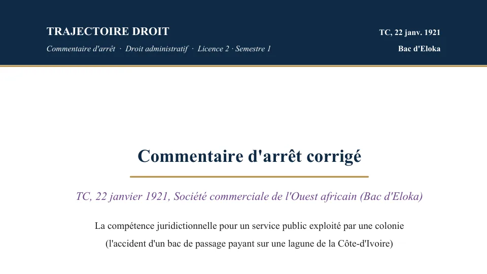
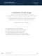

L'arrêt Bac d'Eloka expliqué simplement
L'arrêt Bac d'Eloka montre qu'un service public peut relever du droit privé et du juge judiciaire. Le 22 janvier 1921, le Tribunal des conflits juge qu'un bac payant, exploité par la colonie de Côte d'Ivoire, fonctionne comme une entreprise de transport, si bien que le juge judiciaire est compétent pour l'accident. En cas pratique, l'arrêt sert donc à qualifier un service public et à trouver le bon juge.


Commentaire d'arrêt corrigé
Le commentaire de l'arrêt Bac d'Eloka, rédigé en entier
Le PDF de 12 pages contient le texte intégral de la décision, puis son commentaire rédigé de l'accroche jusqu'à la dernière sous-partie. Le commentaire suit un plan en deux parties, avec d'abord « la reconnaissance d'un service public à gestion privée », puis « l'attribution du contentieux de ce service au juge judiciaire ». De plus, chaque argument s'appuie sur les arrêts et les articles du cours.
Tu peux aussi recevoir gratuitement le plan détaillé par email.
Paiement Stripe · accès à vie · garantie satisfait ou remboursé sous 7 jours
Ce que décide cet arrêt
L'arrêt Bac d'Eloka a été rendu le 22 janvier 1921 par le Tribunal des conflits, sous son nom officiel de Société commerciale de l'Ouest africain.
Un service public peut être géré comme une entreprise privée. Dans ce cas, le droit privé s'applique et le juge judiciaire est compétent. L'arrêt crée ainsi une catégorie nouvelle, le service public industriel et commercial, qu'on appelle le SPIC.
Avant cet arrêt, tout service public relevait du droit administratif et du juge administratif. Cette règle venait de l'arrêt Blanco de 1873, que l'arrêt Terrier de 1903 avait ensuite étendu aux collectivités locales.
Depuis Eloka, le droit applicable dépend de la façon dont le service fonctionne. C'est pourquoi l'arrêt revient dans presque tous les cas pratiques sur la notion de service public. Dans ces cas pratiques, on te demande d'abord de qualifier le service, c'est-à-dire de le ranger dans une catégorie, puis de dire quel juge est compétent.
Eloka crée la distinction entre deux types de service public. Le service public administratif (SPA) relève du droit administratif et du juge administratif. En revanche, le service public industriel et commercial (SPIC) relève surtout du droit privé et du juge judiciaire. En cas pratique, le correcteur attend donc d'abord que tu ranges le service dans la bonne catégorie.
Le bac d'Eloka, exploité par la colonie de Côte d'Ivoire, coule pendant une traversée. Une voiture de la Société commerciale de l'Ouest africain tombe dans la lagune.
La société demande au juge des référés de Grand-Bassam de nommer un expert. Le lieutenant-gouverneur conteste la compétence du juge judiciaire, puis élève le conflit le 13 octobre 1920.
Le Tribunal des conflits retient la compétence du juge judiciaire, car la colonie exploite ce service dans les mêmes conditions qu'un industriel ordinaire.
Le service public industriel et commercial (SPIC) apparaît, à côté du service public administratif (SPA) qui reste soumis au juge administratif.

Commentaire corrigé
Arrêt Bac d'Eloka
Les faits, le bac qui coule sur la lagune Ébrié
En 1920, la Côte d'Ivoire est une colonie française. La route qui relie Grand-Bassam à Bingerville traverse la lagune Ébrié à Eloka, et un bac, c'est-à-dire un bateau à fond plat, y fait passer les piétons et les voitures d'une rive à l'autre. La colonie exploite elle-même ce passage, par le service du wharf de Grand-Bassam, et chaque traversée est payante. Le Tribunal des conflits relève d'ailleurs que la colonie assure ces passages « moyennant rémunération ». Or la colonie est une personne publique, c'est-à-dire une collectivité qui agit au nom de l'intérêt général, comme l'État ou une commune.
Selon les récits de l'affaire, le bac coule pendant la nuit du 5 au 6 septembre 1920. Il transporte à ce moment quatre voitures et dix-huit passagers. L'accident fait un mort, et les quatre voitures tombent en outre dans la lagune. Or l'une d'elles appartient à la Société commerciale de l'Ouest africain, une entreprise de commerce connue sous le sigle SCOA. Après son séjour dans l'eau, cette voiture est donc très abîmée quand on la sort de la lagune.
Juridiquement, la société est une usagère du service, c'est-à-dire une cliente qui a payé pour faire traverser son véhicule. Elle reproche l'accident à la colonie. Pour elle, le naufrage vient soit d'une faute commise dans l'exploitation du bac, soit d'un mauvais entretien du bateau. Avant de réclamer une indemnité, elle veut donc faire examiner le bac par un expert, c'est-à-dire un technicien nommé par le juge, afin de prouver la cause de l'accident.
La procédure, du juge des référés au Tribunal des conflits
Le 30 septembre 1920, la société assigne la colonie devant le président du tribunal civil de Grand-Bassam, qui statue en référé. Le référé est une procédure rapide qui permet d'obtenir une mesure provisoire avant le procès sur le fond. Ici, la société demande donc seulement la nomination d'un expert chargé d'examiner le bac, car l'indemnité ne pourra se discuter qu'une fois la cause de l'accident établie.
Le lieutenant-gouverneur, qui dirige la colonie, conteste aussitôt la compétence du juge judiciaire. Il lui adresse un déclinatoire, c'est-à-dire un acte qui demande au juge de se déclarer incompétent parce que l'affaire relèverait du juge administratif. Le président du tribunal rejette pourtant ce déclinatoire et garde l'affaire. Dans la même ordonnance, il désigne aussi l'expert demandé par la société.
Le lieutenant-gouverneur élève alors le conflit, ce qui signifie qu'il retire l'affaire au juge judiciaire et la porte devant le Tribunal des conflits. Cette juridiction désigne le juge compétent quand l'administration et un particulier ne sont pas d'accord sur ce point, et c'est elle qui avait déjà rendu l'arrêt Blanco en 1873. Le lieutenant-gouverneur agit d'abord par un télégramme du 2 octobre 1920, sans respecter les formes prévues par l'ordonnance du 1er juin 1828. Il prend ensuite, le 13 octobre 1920, un arrêté de conflit régulier, déposé au greffe dans le délai légal. Le Tribunal des conflits s'estime donc régulièrement saisi, et il statue le 22 janvier 1921.
Les arguments, un transporteur ou une administration
Pour la Société commerciale de l'Ouest africain, le litige relève du juge judiciaire. En effet, elle traite la colonie comme n'importe quel transporteur qui aurait mal fait son travail. Elle a payé son passage, puis sa voiture a fini au fond de la lagune à cause, selon elle, d'une faute dans l'exploitation du bac ou d'un mauvais entretien du bateau. Elle s'adresse donc au tribunal civil, exactement comme le ferait le client d'une compagnie privée de transport.
Pour le lieutenant-gouverneur, au contraire, le juge judiciaire ne peut pas juger la colonie pour un service qu'elle gère elle-même. Les lois des 16-24 août 1790 et du 16 fructidor an III, que la décision vise, interdisent en effet aux tribunaux judiciaires de juger l'administration. La décision ne reproduit pas le déclinatoire mot pour mot. Elle examine pourtant deux raisons qui auraient pu donner compétence au juge administratif.
La première raison tient au bac lui-même. S'il avait été un ouvrage public, c'est-à-dire un bien immobilier aménagé pour l'intérêt général, comme une route ou un pont, les dommages qu'il cause auraient relevé du juge administratif. La seconde raison tient au service. Depuis l'arrêt Blanco, la responsabilité d'une personne publique pour le fonctionnement d'un service public relève en principe du juge administratif. Le Tribunal doit donc dire si un passage payant, géré par la colonie comme le ferait une entreprise, entre lui aussi dans cette règle.
Le problème de compétence, quel juge ?
Le Tribunal des conflits doit trancher une question de compétence, c'est-à-dire désigner le juge qui va juger l'affaire.
Quand une personne publique exploite un service de transport et fait payer un passage, comme le ferait n'importe quel transporteur privé, quel juge doit réparer le dommage causé aux usagers, le juge administratif ou le juge judiciaire ?
En effet, la difficulté vient de l'arrêt Blanco. Depuis 1873, dès qu'un dommage se rattache à un service public, on applique le droit administratif, et le juge administratif est compétent.
Or le bac d'Eloka est bien un service public, géré par la colonie. Si l'on suivait Blanco à la lettre, le juge administratif aurait donc dû trancher.
Mais ce service ressemble beaucoup à l'activité d'une entreprise de transport, puisqu'il vend un passage contre de l'argent. Le Tribunal des conflits doit alors décider si cette ressemblance avec une activité privée suffit à changer la réponse.
La solution du Tribunal des conflits
Le Tribunal des conflits tranche en faveur du juge judiciaire et annule l'arrêté de conflit du 13 octobre 1920, ainsi que le télégramme du 2 octobre. Il constate d'abord que le bac d'Eloka n'est pas un ouvrage public. Il juge ensuite que la colonie exploite ce passage comme le ferait une entreprise privée, donc que le juge judiciaire est seul compétent pour en réparer les conséquences.
Le considérant de l'arrêt Bac d'Eloka
« … la colonie de la Côte-d'Ivoire exploite un service de transport dans les mêmes conditions qu'un industriel ordinaire ; que, par suite, en l'absence d'un texte spécial attribuant compétence à la juridiction administrative, il n'appartient qu'à l'autorité judiciaire de connaître des conséquences dommageables de l'accident invoqué. »Tribunal des conflits, 22 janvier 1921, Société commerciale de l'Ouest africain (Bac d'Eloka)
Le Tribunal reproche quand même une erreur au président du tribunal de Grand-Bassam. Quand le lieutenant-gouverneur a contesté sa compétence par un déclinatoire, ce juge devait seulement statuer sur ce point, puis laisser au lieutenant-gouverneur le délai prévu pour élever le conflit. Or il a désigné l'expert dans la même ordonnance, ce qui viole les articles 7 et 8 de l'ordonnance du 1er juin 1828. Cette erreur de procédure laisse pourtant la solution intacte, puisque le juge a eu raison de garder l'affaire.
Le commissaire du gouvernement Matter, c'est-à-dire le magistrat chargé de proposer une solution au Tribunal, avait défendu cette analyse dans ses conclusions. Selon lui, certains services publics relèvent des missions propres de l'État, comme la police, la justice ou l'armée. D'autres, au contraire, sont gérés par l'administration dans les mêmes conditions que par un simple industriel.
Pour ces services, le droit commun doit donc s'appliquer, c'est-à-dire le droit applicable aux particuliers. Le service de bac vend une prestation de transport contre paiement, si bien qu'il fonctionne comme une entreprise. Le juge judiciaire est donc compétent et le droit privé s'applique.
Pourquoi c'est l'arrêt fondateur du SPIC
Premier apport, l'invention du SPIC. Avant Eloka, on raisonnait comme si tout service public relevait forcément du droit administratif. L'arrêt met fin à ce raisonnement, car il reconnaît qu'il existe des services publics gérés comme des entreprises privées, qu'on appelle depuis les services publics industriels et commerciaux.
Par opposition, les autres services publics, que l'administration gère avec ses pouvoirs de puissance publique, forment la catégorie des services publics administratifs, les SPA.
Deuxième apport, le critère du mode de gestion. Le service relève du droit privé à cause de la manière dont il est géré. En effet, la colonie aurait pu organiser ce transport sous une forme administrative.
Mais elle a choisi de l'exploiter comme un commerçant, en vendant des passages. Le juge regarde donc comment le service fonctionne réellement, en plus de savoir qui le gère.
Troisième apport, le partage du contentieux. Depuis Blanco, le juge compétent suit le droit applicable, et Eloka garde ce lien. L'arrêt ajoute pourtant qu'un service public peut relever du droit privé, donc du juge judiciaire. Les litiges se partagent ainsi entre les deux juges.
Les SPA relèvent du juge administratif, et les SPIC du juge judiciaire dans leurs rapports avec les usagers. Mon article sur l'arrêt Blanco, qui fonde le droit administratif, explique d'où vient cette logique.
Distinguer le SPA du SPIC, la méthode
Après Eloka, les juges ont mis au point une méthode en deux temps pour ranger un service dans la bonne catégorie, et c'est elle que tu appliques en cas pratique.
D'abord, une présomption. Tout service public est présumé administratif, c'est-à-dire qu'on le considère comme un SPA tant que le contraire n'est pas prouvé. Celui qui prétend qu'un service est un SPIC doit donc renverser cette présomption. Tu pars ainsi de l'idée que le service est un SPA, puis tu vérifies si cette qualité peut être écartée.
Ensuite, un faisceau de trois indices, c'est-à-dire trois éléments que le juge examine ensemble. Ils viennent de l'arrêt Union syndicale des industries aéronautiques, rendu par le Conseil d'État en Assemblée le 16 novembre 1956, qu'on cite souvent sous le sigle USIA. En pratique, les trois indices doivent tous montrer une gestion de type privé pour que le service soit qualifié de SPIC.
- L'objet du service. Le service exerce une activité qu'une entreprise privée pourrait aussi bien assurer, par exemple vendre un bien ou fournir une prestation contre paiement. Le transport par bac d'Eloka en est l'exemple type.
- L'origine des ressources. Le service est financé surtout par les sommes que les usagers paient en échange du service rendu, qu'on appelle des redevances. Un service financé par l'impôt ou par des subventions publiques se rattache au contraire au SPA.
- Les modalités de fonctionnement. Le service est géré comme une entreprise. Il tient par exemple une comptabilité de commerce et emploie du personnel soumis au droit du travail. De plus, il n'utilise pas les prérogatives de puissance publique, c'est-à-dire les pouvoirs qu'un particulier n'a pas.
Attention, la loi peut régler la question avant même l'examen des trois indices. En effet, quand le législateur a lui-même qualifié le service, sa qualification s'impose au juge. Tu déroules donc les trois critères seulement quand aucun texte ne qualifie le service.
Ce que ça change pour les usagers et les agents
La qualification de SPIC change le régime des usagers et celui des agents, et la question de cas pratique porte souvent sur l'un de ces deux points.
Pour les usagers, les rapports avec un SPIC relèvent du droit privé et du juge judiciaire, quelle que soit la situation de l'usager. Le Conseil d'État l'a jugé dans l'arrêt Établissements Campanon-Rey du 13 octobre 1961. Un litige entre l'usager et le service se règle donc devant le juge judiciaire, comme un litige entre une entreprise et son client.
Pour les agents, le personnel d'un SPIC est en principe soumis au droit privé et au droit du travail. Lorsque le SPIC est géré par une personne publique, l'agent chargé de la direction de l'ensemble du service et le chef de la comptabilité ayant la qualité de comptable public relèvent du droit public, comme l'a jugé le Conseil d'État dans l'arrêt Jalenques de Labeau du 8 mars 1957. Le directeur d'une seule branche du service reste donc un salarié de droit privé.
Les salariés d'un gestionnaire privé relèvent en principe du droit privé, sous réserve d'un texte spécial. De plus, les fonctionnaires affectés au service conservent leur statut.
Attention, le SPA suit la règle inverse. Tout agent non titulaire qui travaille pour le compte d’un service public administratif géré par une personne publique est en effet un agent de droit public, comme l'a jugé le Tribunal des conflits dans l'arrêt Berkani du 25 mars 1996. Beaucoup de copies confondent pourtant les deux régimes.
Comment utiliser l'arrêt Bac d'Eloka dans une copie
Dans un cas pratique. Eloka y sert plus souvent que dans les autres exercices. En effet, dès qu'on te présente un service géré par une personne publique et un litige avec un usager ou un agent, ton premier travail est de qualifier le service.
Tu poses la présomption d'administrativité, puis tu déroules les trois critères de l'arrêt USIA sur les faits de l'énoncé. Selon que les indices convergent ou non vers une gestion privée, tu conclus à un SPA ou à un SPIC, et tu en déduis le juge compétent.
Le correcteur note surtout cet enchaînement, davantage que la citation de l'arrêt. Pour construire ce raisonnement étape par étape, ma méthode du cas pratique te donne la trame complète.
Dans une dissertation. Tu cites Eloka dès que le sujet porte sur la notion de service public ou sur le critère de la compétence administrative.
Tu montres alors comment l'arrêt nuance Blanco, puisqu'il admet qu'un service public peut relever du droit privé. Ma méthode de la dissertation juridique t'aide aussi à structurer ton devoir.
Mon article sur l'arrêt Magnier (CE, 1961) traite un sujet voisin, la gestion d'un service public par une personne privée. Cet arrêt prépare directement les critères des arrêts Narcy et APREI.
Les erreurs à éviter avec l'arrêt Bac d'Eloka
- SPA ou SPIC avant le choix du juge. Eloka montre qu'un service public peut relever du droit privé. Un SPIC relève surtout du droit privé et du juge judiciaire, donc tu qualifies toujours le service avant de désigner le juge.
- Présomption d'abord, critères ensuite. Tu pars toujours de la présomption d'administrativité, puis tu regardes si les trois indices la renversent.
- Tribunal des conflits ou Conseil d'État. Eloka est rendu par le Tribunal des conflits. Comme Blanco, il répartit les affaires entre les deux ordres de juridiction.
- Agents du SPIC ou agents du SPA. Les agents d'un SPIC sont en principe de droit privé, alors que ceux d'un SPA sont de droit public. Tu vérifies donc toujours la nature du service avant de parler du statut des agents.